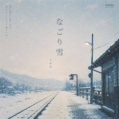

🏫 캠퍼스
낭만적인 설경의 캠퍼스
수업을 들으러 가던 매일 아침, 발목까지 푹푹 빠지는 눈길마저 설레게 만들었던 아름다운 겨울 교정의 풍경입니다.
수업을 들으러 가던 매일 아침, 발목까지 푹푹 빠지는 눈길마저 설레게 만들었던 아름다운 겨울 교정의 풍경입니다.
차가운 공기 속에서 은은하게 빛나는 가스등과 물결을 보며 잊지 못할 겨울의 낭만을 가슴속 깊이 새겼던 날.
뺨이 차가워질 때쯤 들어간 아늑한 카페에서, 따뜻한 온기와 함께 즐기던 달콤하고 부드러운 디저트의 행복.

なごり雪
イルカ